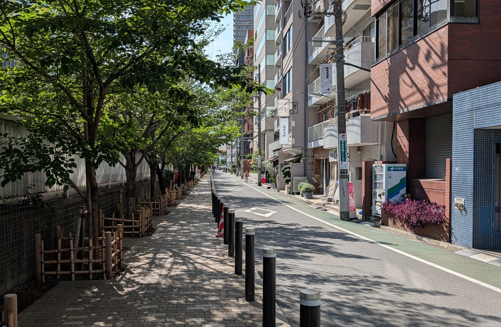
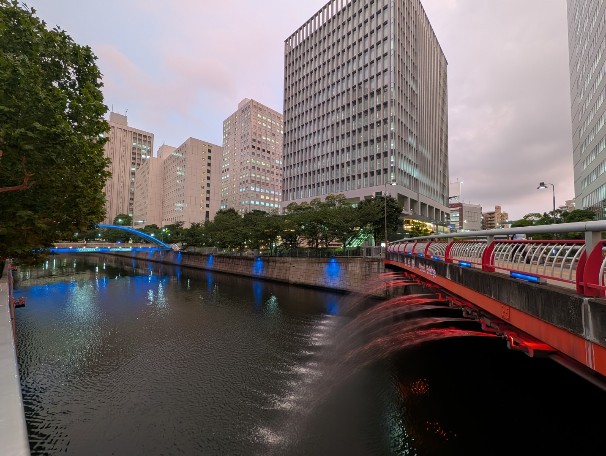
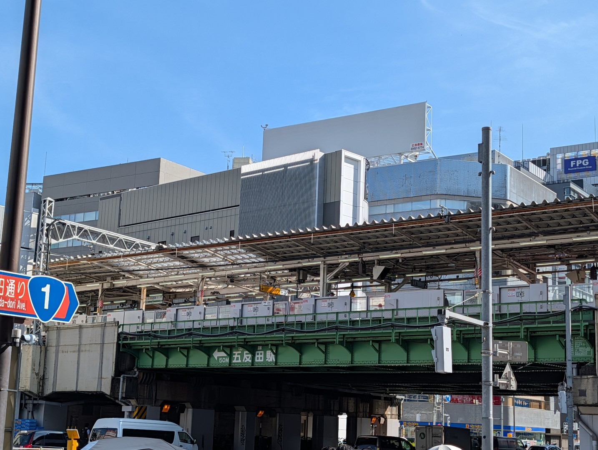
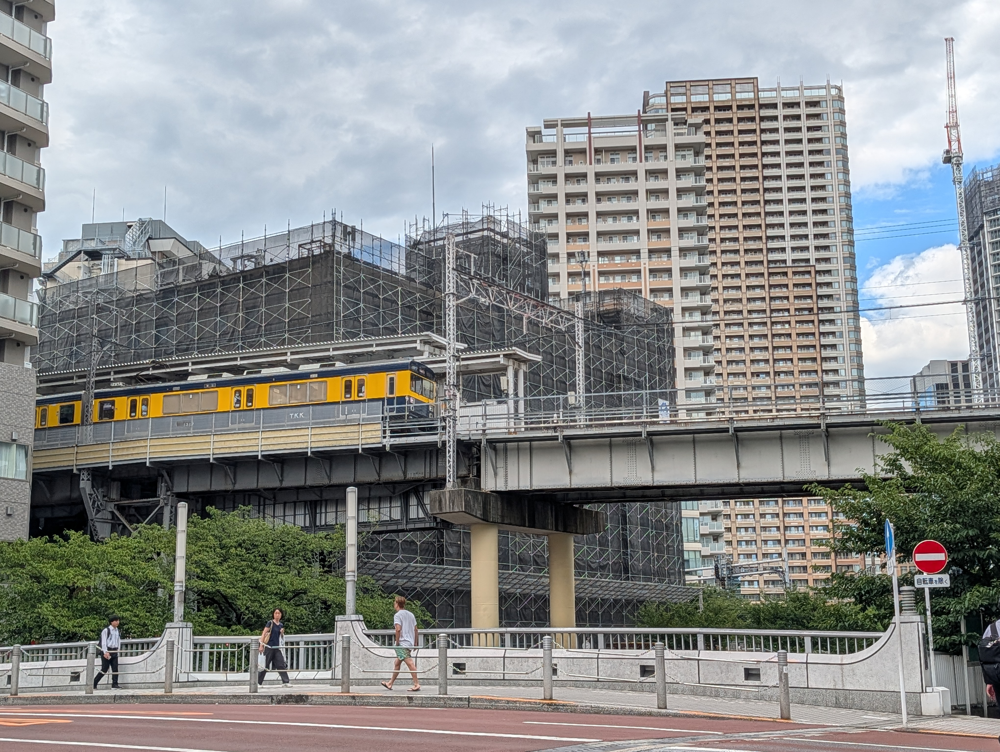
五反田をのんびり歩いて
普段は気づかなかった五反田の魅力を見つけてみませんか？
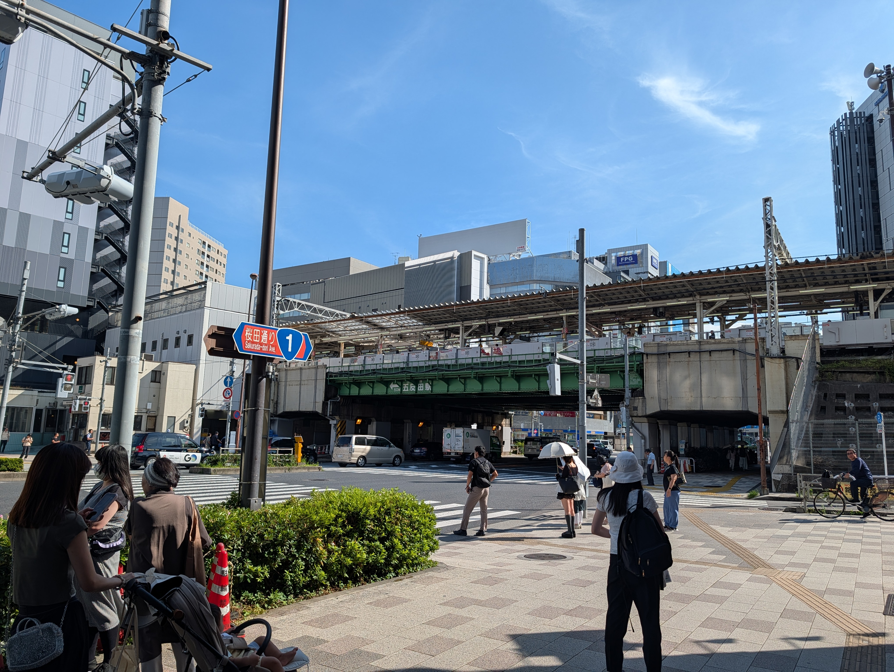
JR/東急池上線/浅草線/国道1号線 が交差する五反田の玄関口。「五反田」の地名は、江戸時代、目黒川周辺の低地に約五反（約1,500坪）田んぼが広がっていたことから来ているとか。
・東京都品川区東五反田１丁目２６
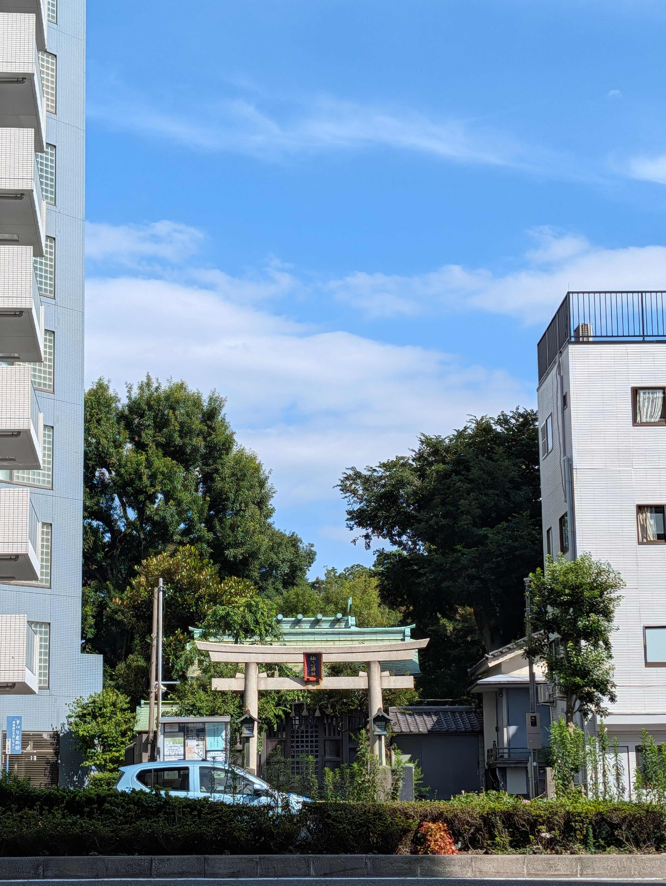
東五反田（中原街道沿い）に位置し、約890年以上の歴史を持つ神社です。地域の人々のお守り神（鎮守様）として長年親しまれています。
・東京都品川区東五反田３丁目６−２０
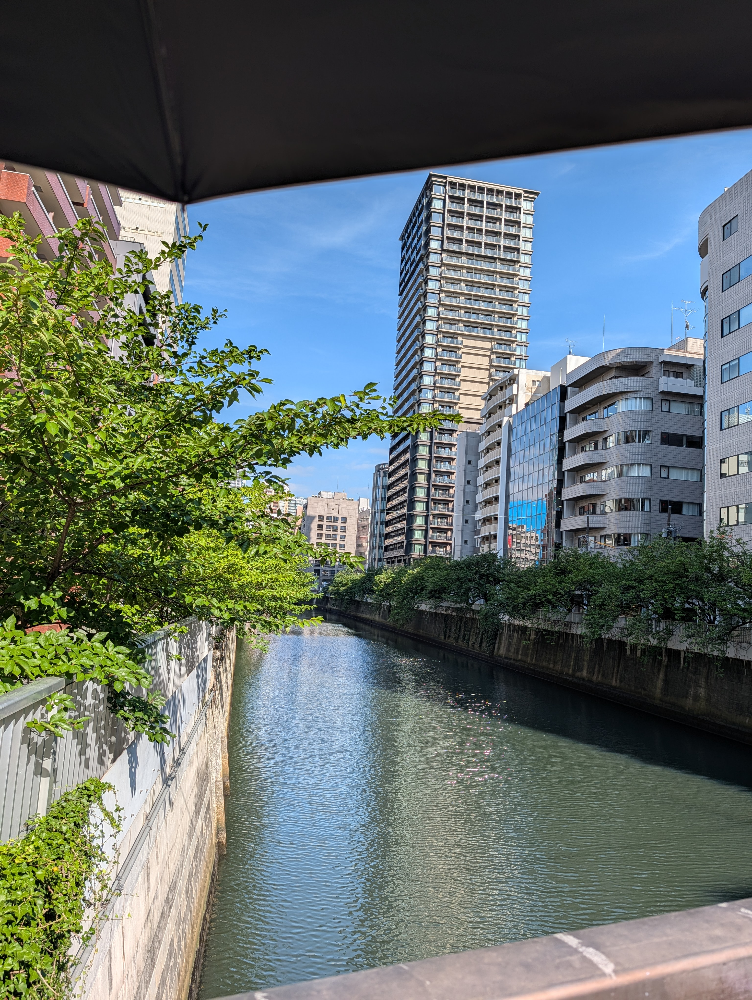
江戸時代から水運の要として活躍し、現在は桜並木を堪能できる絶景スポットになっています。
・東京都品川区１２
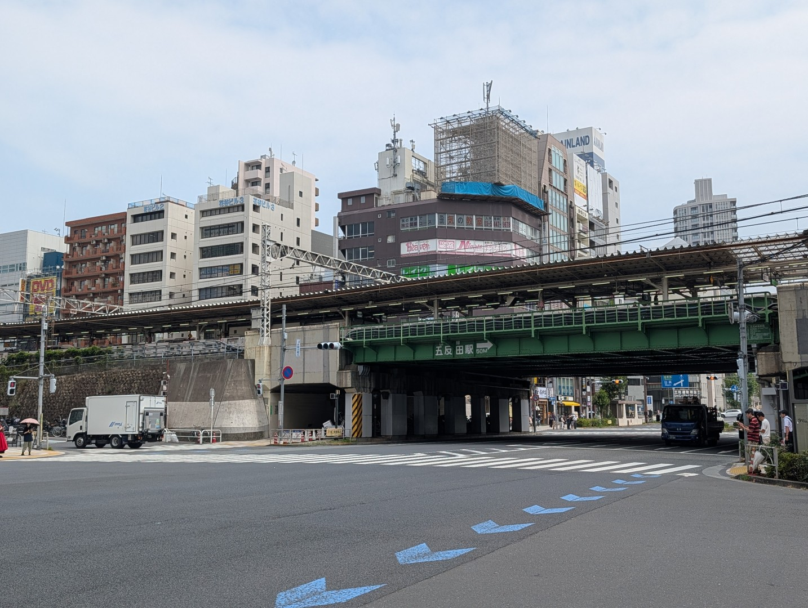
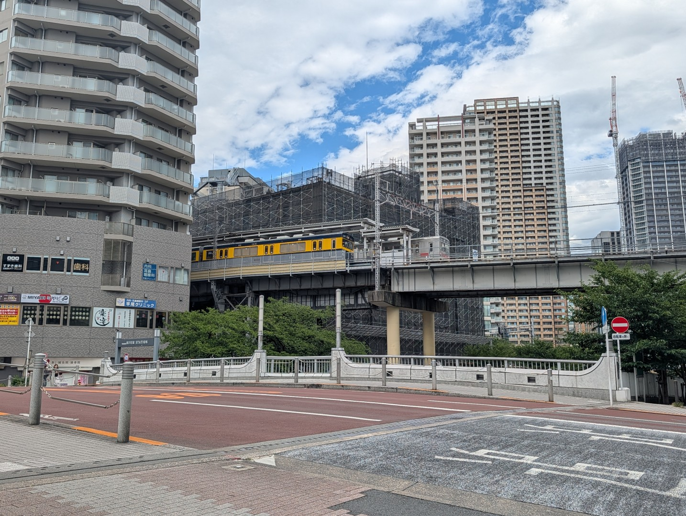
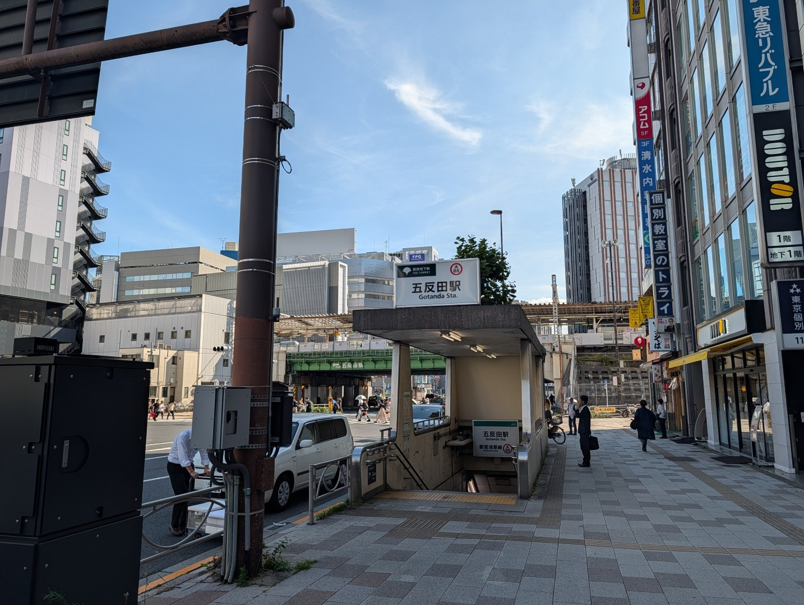
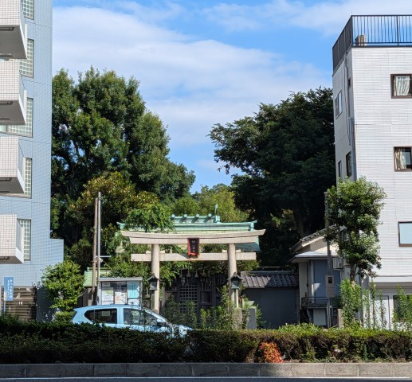
1911年（明治44年）10月15日に開業しました。目黒駅と大崎駅の間にある山手線の駅として作られました。
1928年（昭和3年）6月17日に開業しました。高い場所に駅があるのは、そのまま都心部へ延伸する計画だったとか。現在は、品川区・大田区の住民の重要な通勤手段として活躍している。
1968年（昭和43年）11月15日に開業しました。東京で最初の都営地下鉄（地下鉄1号線）で、高度経済成長期の混雑緩和や、都心部と大田区・品川区方面を結ぶ幹線交通機関として計画されました。
1137年（保延3年）、京都の伏見稲荷から勧請されました。最初は「忍田稲荷大明神（しのだいなり）」として始まり、長い間この土地を見守ってきました。
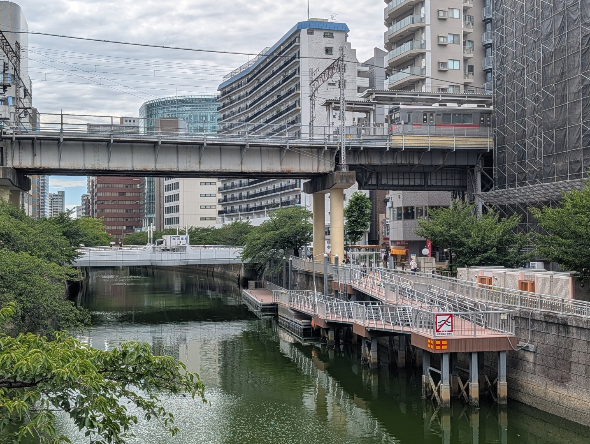
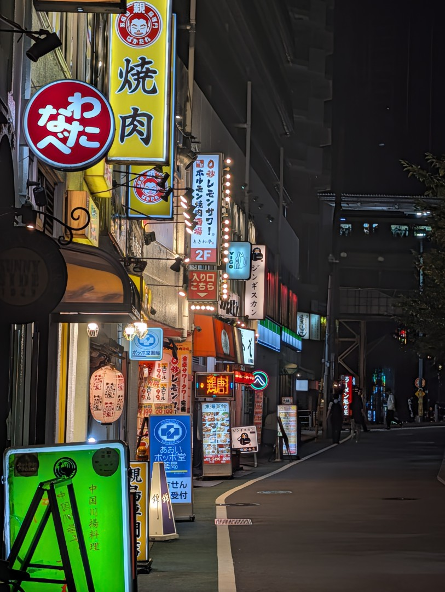
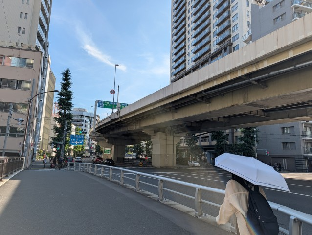
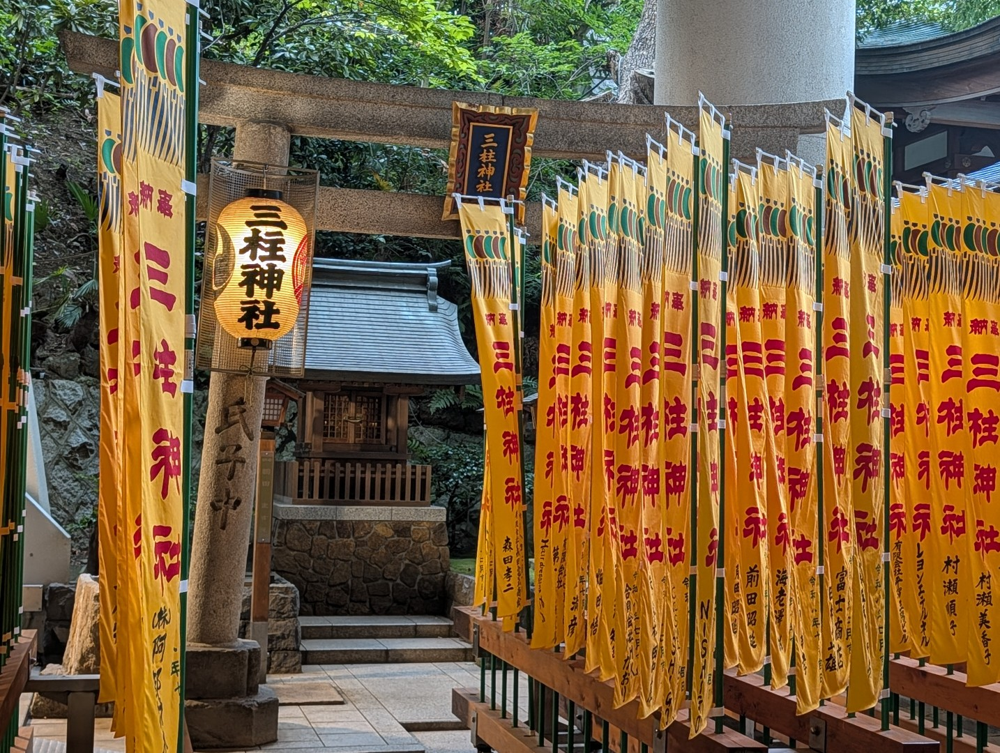